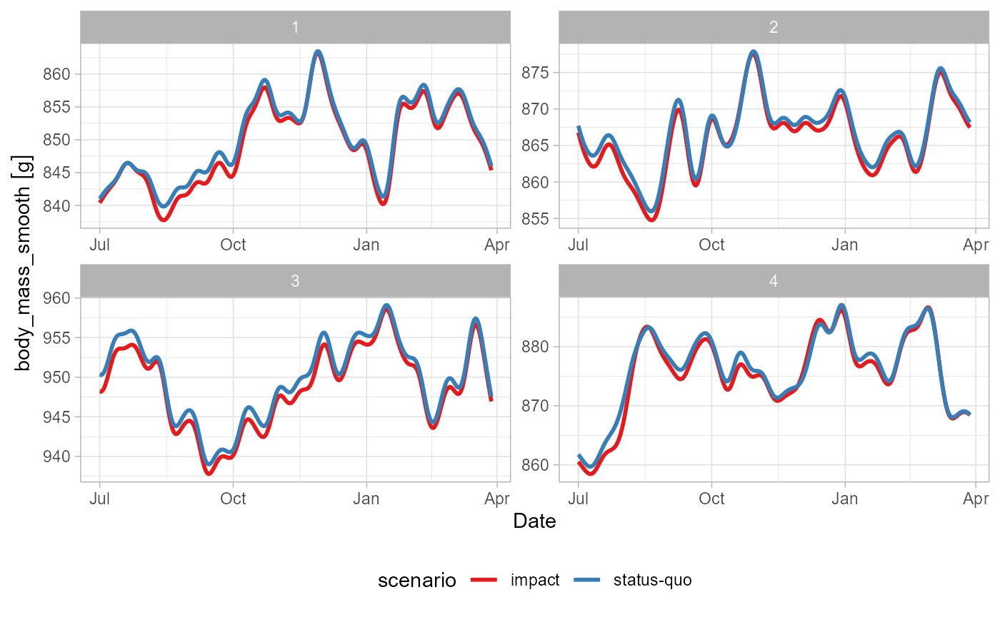
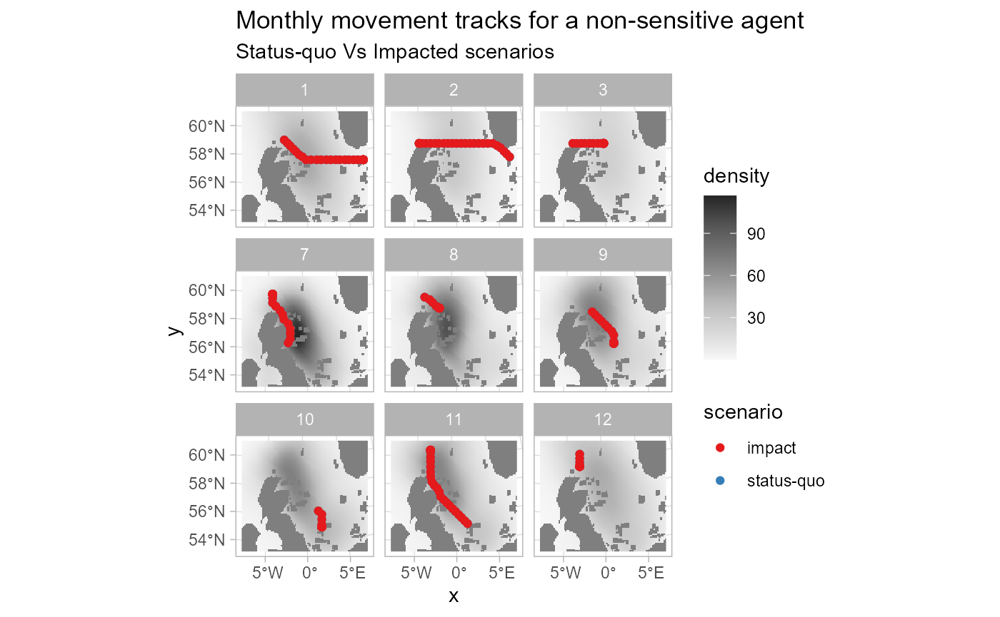
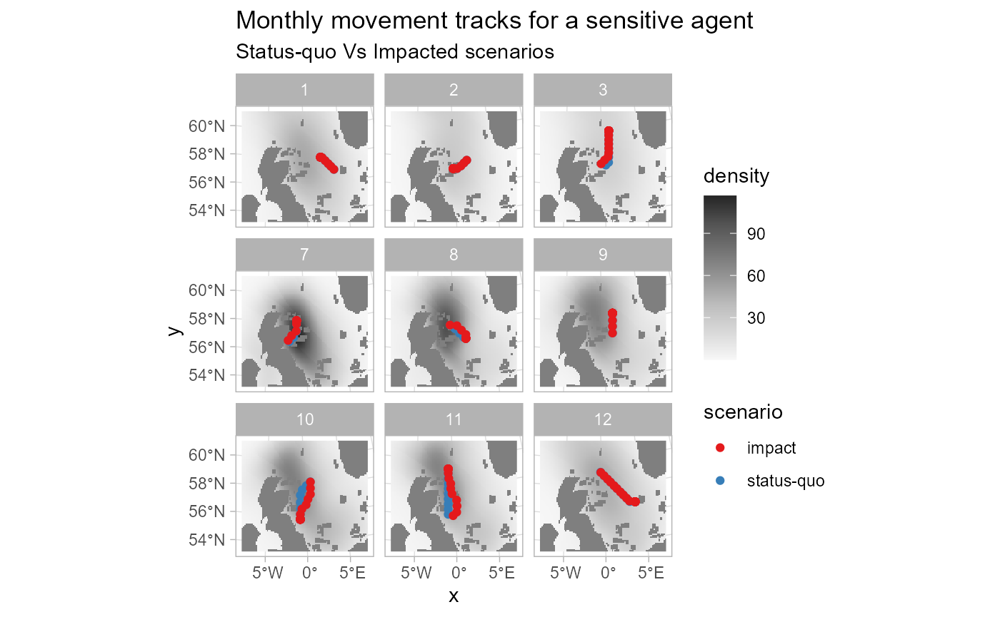

Case Study: guillemot Isle of May
case-study-guillemot.RmdOverview
Here we use roamR to simulate the movement and energetics for a population of common guillemot (Uria aalge) on the Isle of May. For broad-scale details on the roamR package, refer to the general guide, with the general architecture repeated here:

The simulations here cover the non-breeding season (some 9 months, from July to March) under two broad scenarios:
- An environment free of Offshore Windfarms (OWFs) - nominally the status quo
- An environment with many synthetic OWF developments

The overall intention is to quantify the effects of potential displacement from these developments, based on counterfactual comparisons of animal’s condition under these scenarios. In keeping with the architecture of the roamR package, the following main components will be populated:
-
IBM general settings
(
<ModelConfig>) sundry high-level controls for the simulation, such as the number of agents, broad spatial boundaries, spatial projections, time-steps, start & finish dates. -
Species-level information
(
<Species>) such as distributions governing initial body mass, what behavioural states are possible, movement parameters, and how agents respond to their environment e.g. avoidance of windfarms or landmass, costs associated with activity. -
Drivers (
<Driver>) descriptions/data that define the environment that agents may interact with or respond to e.g. sea surface temperatures, locations of windfarms, coastlines, prey fields etc.
The extent to which these can be reliably populated will obviously vary, with the guillemot chosen here as a population that is relatively well studied. roamR is intentionally general and has substantial functionality that will not be used in a simulation. We will populate various elements of the simulation in turn, before turning to running the simulation and post-processing the results.
Input data
As a relatively well-studied species/population, there are many roamR elements to populate. Mainly these are:
- Density maps
- SST
- Activity data
- Energetics
- Bodyweight
- body mass conversion
which will be a) described in detail and b) specified in roamR forms in the following sections. roamR can be run with very little data (an example of a more data sparse species is given in the alternative test case of red-throated divers), with the results being correspondingly less informative and more stochastic.
IBM configuration
The broad configuration of the IBM is specified via the function
ModelConfig().In the interest of speed, the example
simulation here will not be large in terms of the number of agents to
run - we’ll opt for few agents (n_agents), whereas a
typical run would be 1000s. The non-breeding season for these animals
runs from approximately start of July for 9 months
(start_date, end_date). We’ll opt for a
uniform 1km^2 spatial resolution (x_delta,
y_delta) and have everything operate on the UTM 30N
coordinate system (ref_sys). This will be the basis of
ingesting and aligning the general spatial inputs. Note: the package
currently requires all spatial inputs (e.g. density maps) to be provided
in a common Coordinate Reference System (CRS) 1. The sf
package is generally used for dealing with spatial data (and the
interlinked stars package for spatiotemporal).
# Set UTM zone 30N
utm30 <- st_crs(32630)Agent start and end locations (start_sites,
end_sites) must be supplied assf objects
containing two required columns: id (a unique site
identifier) and prop (the proportion of agents assigned to
each site).
In this example, we use the Isle of May as the sole starting
location, specified by its geographic coordinates (longitude/latitude).
Note that end_sites is not utilised in this the simulation,
meaning the movement model assumes agents remain at their final
locations once the simulation ends. As noted earlier, the site must be
re-projected to the common UTM Zone 30N coordinate reference system.
# location of colony in long/lat degrees - start/finish locations
isle_may <- st_sf(
id = "Isle of May",
prop = 1,
geom = st_sfc(st_point(c(-2.5667, 56.1833))),
crs = 4326)
# re-project to UTM 30N
isle_may <- st_transform(isle_may, crs = utm30)In terms of bounding the entire simulation spatially, we’ve opted for a semi-arbitrary bounding box around the Isle of May that encompasses a large swathe of the North Sea and far to the west of the UK, which covers the bulk of the guillemot density maps. Note this a hard boundary in terms of simulations - data outside this will have no influence.
AoC <- st_bbox(c(xmin = 178831, ymin = 5906535, xmax = 1174762, ymax = 6783609), crs = st_crs(utm30))Passing the above configuration inputs to ModelConfig()
creates a <ModelConfig> object, which we assigned to
guill_ibm_config:
# IBM Settings - assume fixed for these simulations
guill_ibm_config <- ModelConfig(
n_agents = 4,
ref_sys = utm30,
aoc_bbx = AoC,
delta_x = 1000,
delta_y = 1000,
delta_time = "1 day",
start_date = date("2025-07-01"),
end_date = date("2025-07-01") + 270,
start_sites = isle_may
)
class(guill_ibm_config)
#> [1] "ModelConfig"
#> attr(,"package")
#> [1] "roamR"Driver information - specifying the environment
Drivers define the environment that agents may interact with or
respond, with each driver being specified via the Driver()
function. The scope of these will be defined by the level of knowledge
for the species in hand - at the minimum the agents would not be
responsive to the environment. Any environmental component that can/will
be functionally linked to the animal’s behaviour (activity states or
movement) or their energetics, must be included in the definition of the
environment via the drivers.
In this application to the common guillemot, the following drivers are required - all provided as spatio-temporal datacubes (2D rasters giving values for locations over times) so the agents can query their environment at any :
- Monthly species density surfaces, for both baseline and impacted scenarios (Buckingham et al. (2023)). These give monthly density predictions around the UK at a 10 sq-km resolution (with bootstrap uncertainties).
- Monthly energy intake maps (kJ/h), for both baseline and impacted scenarios based on density maps above, and conspecifics (other Guillemots, refer below).
- Monthly average Sea Surface Temperature (SST) maps (National Oceanic and Atmospheric Administration/NOAA here).
roamR enforces a strict requirement that all input variables be accompanied by appropriate measurement units. This ensures that all computations performed during simulation are unit-aware, allowing for accurate operations and conversions.
We begin by uploading these datacubes, assigning measurement units where they are missing.
# driver spatial surfaces
spec_map <- readRDS("data/bioss_spec_map.rds") |>
mutate(density = units::set_units(density, "counts"))
spec_imp_map <- readRDS("data/bioss_spec_imp_map.rds") |>
mutate(density = units::set_units(density, "counts"))
intake_map <- readRDS("data/guill_energy_intake_map.rds")
imp_intake_map <- readRDS("data/guill_impacted_energy_intake_map.rds")
sst_map <- readRDS("data/bioss_sst_stars.rds") |>
mutate(sst = units::set_units(sst, "degree_Celsius")) |>
stars::st_warp(crs = sf::st_crs(spec_map), threshold = 20028)Next we specify the corresponding drivers, and stored the as a list
of <Driver> objects. Collectively these define the
environment the agents will move through. This is very flexible, and can
comprise of coastal polygons, OWF footprints, prey-fields etc. Here
we’re providing sea surface temperature animal density surfaces, and
maps that reflect the energy Note here we’re adopting the
density-informed movement model (refer guidance document) which
uses density maps for location preference. The feasible locations are
defined by the density surfaces (so coast is implicit), and OWF are
similarly implicit in the “impact” density surfaces, where OWF-sensitive
agents avoid developments.
Here the energetics maps reflect an Ideal Free Distribution (IFD) in the unimpacted case i.e. the agent’s energy requirements are met on average - their distribution reflects the underlying resource. The impacted energy maps reflect displacement from the OWF footprints, including the conspecifics, meaning a proportional reduction in the IFD due to competition from other guillemot e.g. twice as many individuals means 1/2 the resource.
# Set up IBM drivers
dens_drv <- Driver(
id = "dens",
type = "resource",
descr = "species dens map",
stars_obj = spec_map,
obj_active = "stars"
)
dens_imp_drv <- Driver(
id = "dens_imp",
type = "resource",
descr = "species redist map",
stars_obj = spec_imp_map,
obj_active = "stars"
)
energy_drv <- Driver(
id = "energy",
type = "resource",
descr = "energy map",
stars_obj = intake_map,
obj_active = "stars"
)
imp_energy_drv <- Driver(
id = "imp_energy",
type = "resource",
descr = "energy impact map",
stars_obj = imp_intake_map,
obj_active = "stars"
)
sst_drv <- Driver(
id = "sst",
type = "habitat",
descr = "Sea Surface Temperature",
stars_obj = sst_map,
obj_active = "stars"
)
# store as list for initialisation
guill_drivers <- list(
dens = dens_drv,
imp_dens = dens_imp_drv,
energy = energy_drv,
imp_energy = imp_energy_drv,
sst = sst_drv
)Species information - properties that inform individual agents
Species-level information is defined using the Species()
function, which depends on a set of input objects. For clarity and
modularity, these inputs should be prepared and specified
beforehand.
States Profile
We begin by defining the behavioural states to include in the model. Each state represents a specific activity, characterized by parameters such as energy expenditure, time allocation, and movement speed.
States are created using the State() function.
roamR supports flexible specification of state
properties, allowing the incorporation of stochastic variation at both
the population and individual (agent) level.
Here we include 4 states:
- flying
- diving
- active on water (i.e. swimming)
- inactive on water (i.e. resting)
We start with the ‘flight’ state. For the current simulation, we
assume the energetic cost of flying for each agent varies throughout the
simulation, following a Normal distribution with mean
507.6 kJ/h and standard deviation
of237.6 kJ/h. The source for these figures are Elliott et al. (2013).
Stochasticity can enter in various ways, here we specify the average speed of each agent to be fixed over the simulation (e.g. we’re implying relatively fast/slow animals), with agents speeds drawn from a uniform distribution, as specified below.
# user-defined function returning the energy cost of flying
flight_cost_fn <- function(mean, sd){
e <- rnorm(1, mean, sd)
(max(e, 1)) |>
units::set_units("kJ/h")
}
flight <- State(
id = "flight",
energy_cost = VarFn(
flight_cost_fn,
args_spec = list(mean = 507.6, sd = 237.6),
units = "kJ/hour"
),
time_budget = VarDist(0.056, "hours/day"),
speed = VarDist(dist_uniform(10, 20), "m/s")
)The state representing the ‘diving’ activity (Elliott et al. 2013) as energy output
contingent on the amount of diving. Here we are performing day-level
calculations, meaning we are far from simulating at the dive level, and
can use a mean dive-length without loss of generality. This is
t_dive and populated later from tag information.
Where is the dive length of dive in minutes.
# define costing function
dive_cost_fn <- function(t_dive, alpha_mean, alpha_sd){
alpha <- rnorm(1, alpha_mean, alpha_sd)
(max(alpha*sum(1-exp(-t_dive/1.23))/sum(t_dive)*60, 1)) |>
units::set_units("kJ/h")
}
# Construct <State> object
dive <- State(
id = "diving",
energy_cost = VarFn(
dive_cost_fn,
args_spec = list(t_dive = 1.05, alpha_mean = 3.71, alpha_sd = 1.3),
units = "kJ/hour"
),
time_budget = VarDist(3.11, "hours/day"),
speed = VarDist(dist_uniform(0, 1), "m/s")
)State representing ‘active on water’ (Buckingham et al. 2023) is a linear function in SST:
where has a mean of 113 and SD of 22. is a constant of 2.75.
active_water_cost_fn <- function(sst, int_mean, int_sd){
int <- rnorm(1, int_mean, int_sd)
(max(int-(2.75*sst), 1)) |>
units::set_units("kJ/h")
}
# Construct <State> object
active <- State(
id = "active_on_water",
energy_cost = VarFn(
active_water_cost_fn,
args_spec = list(sst = "driver", int_mean = 113, int_sd = 22),
units = "kJ/hour"
),
time_budget = VarDist(10.5, "hours/day"),
speed = VarDist(dist_uniform(0, 1), "m/s")
)State for ‘inactive on water’ (Buckingham et al. 2023), follows the same linear function in SST, but where has a mean of 72.2 and SD of 22. is similarly constant at 2.75.
inactive_water_cost_fn <- function(sst, int_mean, int_sd){
int <- rnorm(1, int_mean, int_sd)
(max(int-(2.75*sst), 1)) |>
units::set_units("kJ/h")
}
inactive <- State(
id = "inactive_on_water",
energy_cost = VarFn(
active_water_cost_fn,
args_spec = list(sst = "driver", int_mean = 72.2, int_sd = 22),
units = "kJ/hour"
),
time_budget = VarDist(10.3, "hours/day"),
speed = VarDist(dist_uniform(0, 1), "m/s")
)These are combined to give a list covering all states:
guill_states:
guill_states <- list(
flight = flight,
dive = dive,
active = active,
inactive = inactive
)Driver Responses
In this section, we define species-level, agent-specific responses to
the environmental drivers introduced and defined earlier. For the
guillemot model, we assign the density drivers - identified as
"dens" (baseline) and "dens_imp" (impacted) -
as the primary determinants of agent movement (density maps as per Buckingham et al. (2022)). For each scenario, we
also specify the probability that an agent is influenced by the
respective driver. In the baseline case, all agents “respond” to the
density map for their movement. For driver "dens_imp", this
probability reflects how likely an agent is to respond to a OWF
installation (Peschko et al. 2024) - hence
their influence map differs.
resp_dens <- DriverResponse(
driver_id = "dens",
movement = MoveInfluence(
prob = VarDist(distributional::dist_degenerate(1)),
type = "attraction",
mode = "cell-value",
sim_stage = "bsln"
)
)
resp_imp_dens <- DriverResponse(
driver_id = "dens_imp",
movement = MoveInfluence(
prob = VarDist(distributional::dist_normal(0.67, sd = 0.061)),
type = "attraction",
mode = "cell-value",
sim_stage = "imp"
)
)Create the <Species> object
In addition to the parameters defined above, we set the remaining species-level properties, including the body mass distribution (used to initialise each agent’s body mass) and the energy-to-mass conversion rate (Dunn et al. 2022), which is assumed constant across agents and simulated time steps. The distribution of body mass at start of breeding season was drawn/inferred from Harris and Wanless (1988) (with additional advice from F. Daunt, pers. comm., 2025) .
guill <- Species(
id = "guill",
common_name = "guillemot",
scientific_name = "Uria Aalge",
body_mass_distr = VarDist(dist_normal(mean = 929, sd = 56), "g"),
energy_to_mass_distr = VarDist(0.072, "g/kJ"),
states_profile = guill_states,
driver_responses = list(resp_dens, resp_imp_dens)
)Setting up and running the IBM
Now the key components of the IBM have been specified, roamR can be used for the initialisation and running of the simulations.
Initialisation
The intialisation stage performs two main tasks prior to running:
- The checking of inputs for conformity, some adjustments (e.g. clipping to the AoC) and derivation of of vector fields where needed.
- The generation the
n_agentsas indicated in the model config object.
set.seed(1009)
guill_ibm <- xfun::cache_rds({
rmr_initiate(
model_config = guill_ibm_config,
species = guill,
drivers = guill_drivers
)
})Running the simulation
The running of the simulation involves moving each of the initialised agents through the defined environment, with monitoring of their condition through time and determining their responses to these. Parallelisation is dealt with (and assumed to be generally used) such that individual agents are piped out to independent threads of calculation - hence the speed of a simulation is a function of the number of cores available2.
Much of the parameterisiation and data from previous sections are
encapsulated within the ibm object (guill_ibm)
passed to the simulation. Several additional parameters as per
documentation can be entered here as needed. Here we specify:
- What state(s) are feeding states or resting states - the state-balancing calculations (refer to main documentation) will increase/decrease these as required
-
feed_avg_net_energythe average net energy per unit feeding - here a tuning parameter, calculable directly as the energy required to balance the energetics equations for an average agent. -
target_energythe objective of the state rebalancing in terms of daily energy (refer to main documentation). This controls the extent agents change their feeding behaviour in response to feeding success - low success means more feeding the following day. This is expressed as a target daily net energy, which here is a modest positive value, based on empirical results of body mass at the start and end of the non-breeding season (pers. comm. F. Daunt 2025). -
smooth_body_massa use-defined function to convert energy time-series to mass. Here mass deposition occurs as a function of the preceding 7 days energy intake (pers. comm. J. Green, 2025).
plan(multisession, workers = 2)
guill_results <- xfun::cache_rds({
run_disnbs(
ibm = guill_ibm,
run_scen = "baseline-and-impact",
dens_id = "dens",
intake_id = "energy",
imp_dens_id = "dens_imp",
imp_intake_id = "imp_energy",
feed_state_id = "diving",
roost_state_id = "inactive_on_water",
feed_avg_net_energy = units::set_units(422, "kJ/h"),
target_energy = units::set_units(1, "kJ"),
smooth_body_mass = bm_smooth_opts(time_bw = "7 days"),
waypnts_res = 1000,
seed = 1990
)
})
plan(sequential)Digesting the results
roamR records an extensive amount of information from its running and monitoring of the agents. The primary output is a list, with one element for each agent. The stored agents consist of three main components (each their own class, as per the package schema):
-
properties- were drawn/set at the intialisation of the simulation from the species definition, remain constant throughout -
condition- the specific condition of the agent at any point in the simulation. This will be the final condition at when the simulation completes. -
history- a detailed record of elements of the agent’s condition throughout the simulation. Spatiotemporally stamped, and includes post-processed energy-to-mass conversions.
These form the basis of any downstream calculations based on the simulation outputs. When there are impact scenarios in play, there will be more than one such list, with agents paired over the impact scenarios e.g. baseline versus impact.
We can examine the agent’s simulation histories directly - here we have two scenarios, each containing a number of agents:
# two scenarios
names(guill_results)
#> [1] "agents_bsln" "agents_imp"
# several agents within each
length(guill_results$agents_bsln)
#> [1] 4
# one agents history
str(guill_results$agents_bsln[[1]]@history)
#> Classes 'sf' and 'data.frame': 272 obs. of 15 variables:
#> $ timestep : int 0 1 2 3 4 5 6 7 8 9 ...
#> $ timestamp : POSIXct, format: NA "2025-07-01" ...
#> $ track_id : int 0 1 1 1 1 1 1 1 1 1 ...
#> $ body_mass : Units: [g] num 893 843 824 860 787 ...
#> $ body_mass_smooth : Units: [g] num NA 841 841 842 842 ...
#> $ states_budget.flight : num 0.00234 0.0025 0.00243 0.00257 0.00229 ...
#> $ states_budget.diving : num 0.1298 0.0677 0.0941 0.0444 0.1454 ...
#> $ states_budget.active_on_water : num 0.438 0.469 0.456 0.481 0.43 ...
#> $ states_budget.inactive_on_water : num 0.43 0.46 0.447 0.472 0.422 ...
#> $ states_unit_cost.flight : Units: [kJ/h] num 0 -326 -580 -268 -380 ...
#> $ states_unit_cost.diving : Units: [kJ/h] num 0 -176.8 -210.4 -138.4 -87.9 ...
#> $ states_unit_cost.active_on_water : Units: [kJ/h] num 0 -108.2 -100.6 -76.2 -118.9 ...
#> $ states_unit_cost.inactive_on_water: Units: [kJ/h] num 0 -64.9 -29.3 -47.7 -49.5 ...
#> $ energy_expenditure : Units: [kJ] num 0 -684 -952 -449 -1472 ...
#> $ geometry :sfc_POINT of length 272; first list element: 'XY' num 526896 6226565
#> - attr(*, "sf_column")= chr "geometry"
#> - attr(*, "agr")= Factor w/ 3 levels "constant","aggregate",..: NA NA NA NA NA NA NA NA NA NA ...
#> ..- attr(*, "names")= chr [1:14] "timestep" "timestamp" "track_id" "body_mass" ...Comparing scenarios
Here we extract the history from agents under the two scenarios for comparison. All agents over both scenarios are combined into one dataset.
#> Simple feature collection with 2176 features and 19 fields
#> Geometry type: POINT
#> Dimension: XY
#> Bounding box: xmin: 363772.8 ymin: 5958868 xmax: 1143527 ymax: 6746621
#> Projected CRS: WGS 84 / UTM zone 30N
#> First 10 features:
#> scenario agent timestep timestamp track_id body_mass body_mass_smooth
#> 1 status-quo 1 0 <NA> 0 892.7471 [g] NA [g]
#> 2 status-quo 1 1 2025-07-01 1 843.4863 [g] 841.0222 [g]
#> 3 status-quo 1 2 2025-07-02 1 824.1961 [g] 841.3407 [g]
#> 4 status-quo 1 3 2025-07-03 1 860.4239 [g] 841.6555 [g]
#> 5 status-quo 1 4 2025-07-04 1 786.7908 [g] 841.9606 [g]
#> 6 status-quo 1 5 2025-07-05 1 899.6028 [g] 842.2460 [g]
#> 7 status-quo 1 6 2025-07-06 1 851.8596 [g] 842.5069 [g]
#> 8 status-quo 1 7 2025-07-07 1 797.9183 [g] 842.7435 [g]
#> 9 status-quo 1 8 2025-07-08 1 860.3766 [g] 842.9635 [g]
#> 10 status-quo 1 9 2025-07-09 1 844.7294 [g] 843.1735 [g]
#> states_budget.flight states_budget.diving states_budget.active_on_water
#> 1 0.002336644 0.12976717 0.4381207
#> 2 0.002503428 0.06765173 0.4693928
#> 3 0.002432399 0.09410517 0.4560748
#> 4 0.002565795 0.04442471 0.4810865
#> 5 0.002294667 0.14540035 0.4302501
#> 6 0.002685079 0.00000000 0.5034522
#> 7 0.002534260 0.05616915 0.4751738
#> 8 0.002335640 0.13014076 0.4379326
#> 9 0.002565621 0.04448955 0.4810539
#> 10 0.002508006 0.06594702 0.4702511
#> states_budget.inactive_on_water states_unit_cost.flight
#> 1 0.4297755 0.0000 [kJ/h]
#> 2 0.4604520 -326.0301 [kJ/h]
#> 3 0.4473876 -580.4143 [kJ/h]
#> 4 0.4719230 -267.6850 [kJ/h]
#> 5 0.4220549 -380.0569 [kJ/h]
#> 6 0.4938627 -540.9809 [kJ/h]
#> 7 0.4661228 -458.9594 [kJ/h]
#> 8 0.4295910 -452.3054 [kJ/h]
#> 9 0.4718909 -173.1052 [kJ/h]
#> 10 0.4612939 -818.3772 [kJ/h]
#> states_unit_cost.diving states_unit_cost.active_on_water
#> 1 0.00000 [kJ/h] 0.00000 [kJ/h]
#> 2 -176.78357 [kJ/h] -108.17686 [kJ/h]
#> 3 -210.44304 [kJ/h] -100.59187 [kJ/h]
#> 4 -138.40550 [kJ/h] -76.24058 [kJ/h]
#> 5 -87.91532 [kJ/h] -118.91570 [kJ/h]
#> 6 -90.63622 [kJ/h] -132.35904 [kJ/h]
#> 7 -87.63698 [kJ/h] -34.04614 [kJ/h]
#> 8 -66.87361 [kJ/h] -123.85927 [kJ/h]
#> 9 -178.81558 [kJ/h] -91.25478 [kJ/h]
#> 10 -142.40802 [kJ/h] -84.17964 [kJ/h]
#> states_unit_cost.inactive_on_water energy_expenditure Date month
#> 1 0.000000 [kJ/h] 0.00000 [kJ] <NA> NA
#> 2 -64.856872 [kJ/h] -684.17668 [kJ] 2025-07-01 7
#> 3 -29.316059 [kJ/h] -952.09712 [kJ] 2025-07-02 7
#> 4 -47.738181 [kJ/h] -448.93350 [kJ] 2025-07-03 7
#> 5 -49.479257 [kJ/h] -1471.61472 [kJ] 2025-07-04 7
#> 6 -8.571322 [kJ/h] 95.21804 [kJ] 2025-07-05 7
#> 7 -10.708986 [kJ/h] -567.88115 [kJ] 2025-07-06 7
#> 8 -46.383505 [kJ/h] -1317.06559 [kJ] 2025-07-07 7
#> 9 -59.964954 [kJ/h] -449.59019 [kJ] 2025-07-08 7
#> 10 -6.390341 [kJ/h] -666.91142 [kJ] 2025-07-09 7
#> suscep geometry
#> 1 FALSE POINT (526895.8 6226565)
#> 2 FALSE POINT (543716.2 6248777)
#> 3 FALSE POINT (543716.2 6248777)
#> 4 FALSE POINT (543716.2 6248777)
#> 5 FALSE POINT (543716.2 6248777)
#> 6 FALSE POINT (543716.2 6248777)
#> 7 FALSE POINT (543716.2 6248777)
#> 8 FALSE POINT (543716.2 6248777)
#> 9 FALSE POINT (543716.2 6248777)
#> 10 FALSE POINT (543716.2 6248777)body mass traces
We can examine a small number of agents graphically - here their body mass histories as implied by the simulated energetics. Note roamR at its heart simulates energetics, so conversion functions from energy to mass are specified by the user. Here the primary conversion figure is from Dunn et al. (2022), relating energy to grams of body mass.
p_bdm <- guill_history |>
ggplot() +
geom_line(aes(x = Date, y = body_mass_smooth, col = scenario), linewidth = 1) +
scale_color_brewer(palette = "Set1") +
theme(legend.position = "bottom") +
facet_wrap(~agent, ncol = 2, scales = "free")
p_bdm
ggsave("images/body mass.png", p_bdm, width = 12, height = 12)
Agent tracks
Similarly movement tracks for select agents over time can be visualised, under the two impact scenarios. Here we separate by a property of the agent - those that were assigned susceptibility to OWF in the agent initialisation - recalling this was a stochastic specification at the species level.
p_tracks <- guill_history |>
drop_na(timestamp) |>
filter(suscep == FALSE) |>
filter(agent == last(agent)) |>
ggplot() +
stars::geom_stars(data = spec_imp_map) +
geom_sf(aes(col = scenario)) +
scale_color_brewer(palette = "Set1") +
scale_fill_distiller(palette = "Greys", direction = 1) +
facet_wrap(~month, ncol = 3) +
labs(title = "Monthly movement tracks for a non-sensitive agent", subtitle = "Status-quo Vs Impacted scenarios")
p_tracks
ggsave("images/tracks_non_susceptile_agent.png", p_tracks, width = 15, height = 15)
p_tracks <- guill_history |>
drop_na(timestamp) |>
filter(suscep == TRUE) |>
filter(agent == last(agent)) |>
ggplot() +
stars::geom_stars(data = spec_imp_map) +
geom_sf(aes(col = scenario)) +
scale_color_brewer(palette = "Set1") +
scale_fill_distiller(palette = "Greys", direction = 1) +
facet_wrap(~month, ncol = 3) +
labs(title = "Monthly movement tracks for a sensitive agent", subtitle = "Status-quo Vs Impacted scenarios")
p_tracks
ggsave("images/tracks_susceptile_agent.png", p_tracks, width = 15, height = 15)Use of counterfactals
Quantification of the impact of the perturbation can be done on any of the defined agent condition (and/or history), but for consenting the utility is through EIAs that likely use:
- Cumulative net energy
- Season-end body mass or mass change
- Distributions of activity/behavioural states
- Minimum body mass over the season
- Mortality
These are not single values, but distributions representing the variability in the simulated populations. While being directly informative at a population level (e.g. the mean %-age of the population lost), the distributions are tangible for down-stream calculations. The most obvious application being in Population Viability Analyses (PVAs) that are frequently required in EIAs for consenting. There the counterfactuals may use:
- Increases in mortality/proportional reductions in population size
- Relationships between body mass and reproductive success, to alter PVA demographic parameters
For example, Natural England provide an R PVA toolset here nepva, frequently used in consenting, where the distributions of productivity can be specified under differing scenarios. The PVAs provide monte-carlo simulations of projected population sizes, which are matched (impact-to-baseline) to give population-level counterfactuals of impacts. The DisNBS simulations can be used to estimate these productivities.